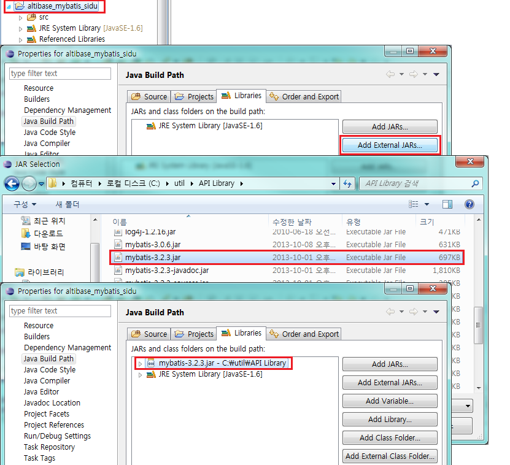
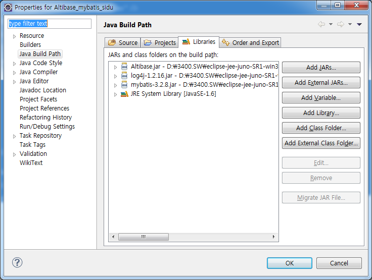
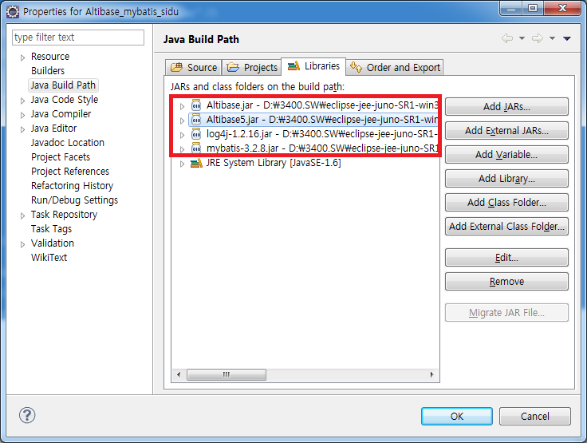

MyBatis에서 ALTIBASE를 연동하는 위해서는 ALTIBASE JDBC Driver를 setting하고 Configuration 파일에 ALTIBASE 를 위한 dataSource를 지정하면 된다. 본 장에서는 ALTIBASE JDBC Driver를 얻는 방법, JDBC Driver를 설정하는 방법, Configuration에 dataSource를 설정하는 방법에 대해 설명한다. 또한, FailOver 기능을 사용하는 방법, 여러 버전의 ALTIBASE와 연동하는 방법, Stored Procedure/Function을 호출하는 방법에 대해서도 살펴본다.
ALTIBASE JDBC Driver 얻는 방법
ALTIBASE에서 제공하는 JDBC driver는 Altibase.jar 파일이다. 이 파일은 ALTIBASE가 설치되어있는 서버의 $ALTIBASE_HOME/lib 디렉토리 안에 존재한다.
ALTIBASE 5버전부터는 $ALTIBASE_HOME/lib 디렉토리에 Altibase.jar 파일과 Altibase5.jar 파일이 존재하는데, Altibase.jar는 일반 JDBC Driver 파일이고, Altibase5.jar는 ALTIBASE 5버전과 그 이하의 버전을 함께 연동하고 싶을 때 사용하는 JDBC Driver 파일이다. 따라서 하나의 ALTIBASE DB와 연동하거나, 또는 버전이 동일한 여러 대의 ALTIBASE와 연동할 경우에는 $ALTIBASE_HOME/lib/Altibase.jar 파일을 사용하면 된다.
연동하려는 ALTIBASE DB Server와 ALTIBASE JDBC Driver가 호환 가능한지 확인을 위해 ALTIBASE JDBC Driver 버전 확인이 필요하다.
ALTIBASE JDBC Driver 버전을 확인하는 방법은 다음의 명령어를 수행하면 된다.
$ java –jar Altibase.jar JDBC Driver Info : Altibase Ver = 6.3.1.2.6 for JavaVM v1.4, CMP:7.1.1, Oct 6 2014 13:54:56
이때, ALTIBASE DB Server의 cm protocol version과 ALTIBASE JDBC Driver의 CMP가 동일하면 호환 가능하다.
$ altibase -v version 6.3.1.2.7 X86_64_LINUX_redhat_Enterprise_ES4-64bit-6.3.1.2.7-release-GCC3.4.6 (x86_64-unknown-linux-gnu) Oct 8 2014 09:16:24, binary db version 6.2.1, meta version 6.3.1, cm protocol version 7.1.1, replication protocol version 7.4.1
버전이 UP 되면서 JDBC 관련 버그가 fix되었을 가능성이 있으므로, 일반적으로 ALTIBASE DB Server의 버전과 같거나 이 보다 더 최신의 ALTIBASE JDBC Driver 파일을 사용하는 것을 권장한다.
JDBC Driver에 설정하는 방법
다운로드 받은 JDBC Driver 인 Altibase.jar 파일은 classpath에 추가하거나 웹서버의 적절한 디렉토리에 위치시킨다.
만약, Eclipse를 사용하여 개발한다면 다음과 같이 해당 프로젝트에 ALTIBASE JDBC Driver를 추가할 수 있다.
프로젝트 – Properties – Java Build Path 메뉴로 이동하여 Add External JARS 메뉴를 통해 라이브러리를 등록 한다.

Configuration 파일에 dataSource를 설정하여 ALTIBASE와 연동
Configuration 파일의 <configuration> 태그에 ALTIBASE 용 property를 지정하여 ALTIBASE와 연결하면 된다. 이 때 Configuration 파일에 직접 property 값을 입력할 수 있고, 또는 별도의 properties 파일을 작성하여 이 파일에 작성된 property값을 로딩하여 사용할 수 도 있다.
다음은 db.properties 라는 properties 파일에 ALTIBASE에 대한 property들을 정의하고, 이 property들을 읽어와 Configuration 파일에서 사용하는 예제이다.
예) altibase_mybatis_sidu의 db.properties 파일
jdbc.driver=Altibase.jdbc.driver.AltibaseDriver jdbc.url=jdbc:Altibase://192.168.1.35:36492/mydb jdbc.username=sys jdbc.password=manager
이 파일에 설정된 각각의 값의 의미는 다음과 같다.
Property |
설명 |
|---|---|
driver |
ALTIBASE JDBC driver class Name |
URL |
ALTIBASE와 연결을 위한 Connection string정보 jdbc:Altibase://IP:port_no/db_name” 형태로 기입 |
username |
데이터베이스 계정 |
password |
데이터베이스 패스워드 |
예) altibase_mybatis_sidu의 mybatis-config.xml 파일
<configuration>
<properties resource="db.properties" />
<typeAliases>
<typeAlias type="com.altibase.sidu.model.UserVo" alias="User" />
</typeAliases>
<!-- DB 연결 옵션 : UNPOOLED/POOLED/JNDI -->
<!-- transanctionManager 옵션 : JDBC/MANAGED -->
<environments default="development">
<environment id="development">
<transactionManager type="JDBC" />
<dataSource type="POOLED">
<property name="driver" value="${jdbc.driver}" />
<property name="url" value="${jdbc.url}" />
<property name="username" value="${jdbc.username}" />
<property name="password" value="${jdbc.password}" />
<property name="poolPingQuery" value="select 1 from dual"/>
<property name="poolMaximumActiveConnections" value="100"/>
<property name="poolMaximumIdleConnections" value="50"/>
<property name="poolMaximumCheckoutTime" value="20000"/>
</dataSource>
</environment>
</environments>
<mappers>
<mapper resource="com/altibase/sidu/mapper/UserMapper.xml" />
</mappers>
</configuration>
db.properties에 지정한 driver, url, username, password property들을 읽어와 dataSource의 JDBC.Driver, JDBC.ConnectionURL, JDBC.Username, JDBC.password property에 setting하고 있다.
위의 예제 SimpleConnection 프로젝트를 실행하기 위해서는 Altibase.jar, mybatis-3.2.8.jar 파일이 필요하다.

FailOver를 이용한 Connection
ALTIBASE 5.3.3부터 FailOver를 지원하는데, FailOver 기능을 사용하기 위해서는 dataSource의 Connection url을 적어주는 부분에 FailOver 관련 속성을 넣어주면 된다.
다음은 FailOver를 이용하여 ALTIBASE에 연결하는 예제이다. db.properties 파일에 Connection url 부분을 정의하였다.
예) FailOverSample의 db.properties 파일 driver=Altibase.jdbc.driver.AltibaseDriver url=jdbc:Altibase://192.168.6.224:21129/mydb? AlternateServers=(192.168.1.35:21129)& ConnectionRetryCount=1&ConnectionRetryDelay=1& SessionFailOver=on&LoadBalance=off&Healthcheckduration=10& Failover_source=MESSAGE& username=sys password=manager
위의 파일에 지정한 Connection url 부분에 정의할 수 있는 FailOver 관련 property는 다음과 같다.
Property |
설명 |
|---|---|
AlternateServer |
장애 발생시 접속하게 될 가용 서버를 나타내며 (IP Address1:Port1, IP Address2:Port2,...) 형식으로 기술한다. |
ConnectionRetryCount |
가용 서버 접속 실패 시, 접속 시도 반복 횟수 |
ConnectionRetryDelay |
가용 서버 접속 실패 시, 다시 접속을 시도하기 전에 대기하는 시간(초 단위) |
LoadBalance |
on으로 설정하면 최초 접속 시도 시에 기본 서버와 가용 서버를 포함하여 랜덤으로 선택한다. off로 설정하면 최초 접속 시도 시에 기본 서버에 접속하고, 접속에 실패하면 AlternateServer로 기술한 서버에 접속한다. |
SessionFailOver |
STF(Service Time Fail-Over)를 할 것인지 여부를 나타낸다. |
Healthcheckduration |
Failover가 발생한 서버가 다시 AlternativeServer |
Failover_source |
Failover를 수행할 때, 서버에 전달하는 Failoversource에 대한 설명을 지정한다. 이 정보는 V$SESSION 성능 뷰의 FAILOVER_SOURCE 칼럼에 저장된다. |
위의 예제 FailOverSample 프로젝트를 실행하기 위해서는 “Configuration 파일에 dataSource를 설정하여 ALTIBASE와 연동”과 마찬가지로 Altibase.jar, ibatis-2.3.4.x.jar 파일이 필요하다.
ALTIBASE5와 이전 버전을 동시에 Connection
ALTIBASE 5부터는 하나의 어플리케이션에서 ALTIBASE 6와 ALTIBASE 5 혹은 ALTIBASE 4와 동시에 연결할 수 있도록 ALTIBASE 5 버전 전용의 JDBC Driver(Altibase5.jar)를 제공한다. 이 Driver를 이용하면 ALTIBASE 6 – ALTIBASE 5, 혹은 ALTIBASE 6 – ALTIBASE 4, ALTIBASE 5.1.5 – ALTIBASE 5.3.3 간 두 버전의 ALTIBASE에 접속이 가능하다.
기존의 Altibase.jar와 구별하기 위해 별도로 ALTIBASE 5 전용의 Altibase5.jar 가 필요하다. 또한 dataSource에 지정해주는 부분에 JDBC Driver 클래스 이름도 기존의 Altibase.jdbc.driver.AltibaseDriver 대신 ALTIBASE 5 전용의 Altibase5.jdbc.driver.AltibaseDriver를 지정해야 한다.
MyBatis에 다른 버전의 ALTIBASE 와 연동하기 위해서는 각 버전에 해당하는 <environment> 태그를 작성하여 Application에서 <environment>의 id를 통해 DB 연결 시 각각의 설정을 읽어드리면 된다. 이 때 주의할 점은 프로그램에서 Altibase5.jdbc.driver.AltibaseDriver를 먼저 로딩한 후에 Altibase.jdbc.driver.AltibaseDriver를 로딩해야 한다는 것이다.
다음은 Altibase.jar와 Altibase5.jar 파일을 이용하여 두 버전의 ALTIBASE의 드라이버를 로딩하는 예제이다.
예) altibase_mybatis_MultiVersionConnection의 db.properties 파일
ALTIBASE 6 버전에 대한 설정
# Altibase jdbc.driver=Altibase.jdbc.driver.AltibaseDriver jdbc.url=jdbc:Altibase://192.168.1.62:21020/mydb jdbc.username=test jdbc.password=test
예) altibase_mybatis_MultiVersionConnection의 db.properties 파일
ALTIBASE 6 이전 버전에 대한 설정
# Altibase 5 jdbc5.driver=Altibase5.jdbc.driver.AltibaseDriver jdbc5.url=jdbc:Altibase://192.168.1.147:21020/mydb jdbc5.username=test jdbc5.password=test
예) altibase_mybatis_MultiVersionConnection의 mybatis-config.xml파일
ALTIBASE 6 버전에 대한 설정
<environment id="release">
<transactionManager type="JDBC" />
<dataSource type="POOLED">
<property name="driver" value="${jdbc.driver}" />
<property name="url" value="${jdbc.url}" />
<property name="username" value="${jdbc.username}" />
<property name="password" value="${jdbc.password}" />
<property name="poolPingQuery" value="select 1 from dual"/>
<property name="poolMaximumActiveConnections" value="100"/>
<property name="poolMaximumIdleConnections" value="50"/>
<property name="poolMaximumCheckoutTime" value="20000"/>
</dataSource>
</environment>
ALTIBASE 6 이전 버전에 대한 설정
<environment id="development">
<transactionManager type="JDBC" />
<dataSource type="POOLED">
<property name="driver" value="${jdbc5.driver}" />
<property name="url" value="${jdbc5.url}" />
<property name="username" value="${jdbc5.username}" />
<property name="password" value="${jdbc5.password}" />
<property name="poolPingQuery" value="select 1 from dual"/>
<property name="poolMaximumActiveConnections" value="100"/>
<property name="poolMaximumIdleConnections" value="50"/>
<property name="poolMaximumCheckoutTime" value="20000"/>
</dataSource>
</environment>
예) altibase_mybatis_MultiVersionConnection의 MultiVersionConnectionMain.java파일
…
MultiVersionConnectionSelect multi_connection_select =
new MultiVersionConnectionSelect();
System.out.println("DB Version = " + multi_connection_select.MultiVersionConnectionDBVersionSelect("release"));
System.out.println("DB Version = " + multi_connection_select.MultiVersionConnectionDBVersionSelect("development"));
…
altibase_mybatis_MultiVersionConnection의 MultiVersionConnectionSelect.java
(public String MultiVersionConnectionDBVersionSelect(String conn_type))
… String statement = "com.altibase.multiVersionConnection.mapper.UserMapper.selectDBVersion"; res_string = MybatisUtil.getSqlSessionFactory(conn_type).selectOne(statement); …
위의 MultiVersionConnectionMain.java.java 예제를 보면 Altibase5.jdbc.driver.AltibaseDriver를 Altibase.jdbc.driver.AltibaseDriver보다 먼저 로딩하기 위해 ALTIBASE 5버전 driver의 <environment> 태그의 id인 release를 인자 값으로 설정하고 있다. 위에서도 기술하였듯이 Altibase5.jdbc.driver.AltibaseDriver 드라이버를 먼저 로딩해야 한다.
예제에 포함된 MultiVersionConnection 프로젝트를 실행하기 위해서는 기존에 사용했던 mybatis.3.2.8.jar 파일 뿐만 아니라, Altibase.jar와 Altibase5.jar 파일이 더 필요하다. 이 파일들은 ALTIBASE가 설치된 디렉토리($ALTIBASE_HOME)의 lib 디렉토리 안에 존재하는데 ALTIBASE 5 버전의 Altibase5.jar 파일, 그 이전 버전의 Altibase.jar 파일을 사용하면 된다.
- ALTIBASE 6.3.1 jar : Altibase.jar
- ALTIBASE 5.x.x.jar : Altibase5.jar

Procedure 호출
myBatis에서 DB에 생성한 Stored Procedure을 호출할 경우에는 기본적인 DML 동작과 같이 Configuration 파일에 설정해주면 되며 다음의 항목을 아래와 같은 점에 주의하여 사용 하여야 한다.
- 기존 iBatis에서 사용하던 <procedure> 태그가 사라지고 statementType으로만 판단하므로 Procedure/Function 사용시에는 statementType을 필히 CALLABLE로 설정해야 함.
- 기존 ibatis에서 사용하던 <parameterMap>을 사용할 수 없다.
다음은 Stored Procedure의 Select 하는 예제이다.
예) altibase_mybatis_procedure의 Procedure 생성 구문
CREATE OR REPLACE PROCEDURE PROC_SEL_TEST(usr_no IN INTEGER, res_user OUT TEST_TYPE.TEST_CUR)
as
SQL_STMT VARCHAR(200);
BEGIN
SQL_STMT :='SELECT user_no as userNo,
user_name as userName,
user_content as userContent,
reg_date as regDate
FROM users
WHERE user_no = ?';
OPEN res_user FOR SQL_STMT USING usr_no;
END;
/
CREATE or replace TYPESET TEST_TYPE
AS
TYPE TEST_CUR IS REF CURSOR;
END;
/
예) altibase_mybatis_procedure의 UserMapper.xml(Mapper) 파일
<select id="testSelectProc" statementType="CALLABLE" parameterType="INTEGER" resultType="User">
{ call PROC_SEL_TEST(
#{userNo,mode=IN,jdbcType=INTEGER,javaType=INTEGER}
) }
</select>
<select> 태그에 statementType의 속성을 CALLABLE로 지정하여 해당 요청이 Procedure/Function이라는 것을 명시하고 호출하는 Procedure/Function의 IN 파라미터에 대한 설정을 정의하며 resultType에 Bean 클래스를 지정함으로써 해당 procedure에 대한 결과를 Bean 클래스로 받아오게 된다.
이 때 Bean 클래스의 컬럼과 DB서 select하는 컬럼명을 동일하게 맞춰줘야 Bean 클래스에 결과가 리턴 된다.
altibase_mybatis_procedure 예제를 실행하기 위해서는 “Configuration 파일에 dataSource를 설정하여 ALTIBASE와 연동”과 마찬가지로 Altibase.jar, mybatis.3.2.8.jar 파일이 필요하다.
Function 호출
myBatis에서 DB에 생성한 Function을 호출할 경우에는 기본적인 DML 동작과 같이 Configuration 파일에 설정해주면 되며 다음의 항목을 아래와 같은 점에 주의하여 사용 하여야 한다.
- 기존 iBatis에서 사용하던 <procedure> 태그가 사라지고 statementType으로만 판단하므로 Procedure/Function 사용시에는 statementType을 필히 CALLABLE로 설정해야 함.
- 기존 ibatis에서 사용하던 <parameterMap>을 사용할 수 없다.
다음은 단순한 덧셈 결과를 리턴하는 Stored Function 처리 예제이며 기본적인 것은 Stored Procedure와 동일하지만 에서 호출하는 부분이 약간 달라 따로 기술하게 되었다.
예) altibase_mybatis_procedure의 Function 생성 구문
CREATE OR REPLACE FUNCTION sum_func ( p_num1 IN NUMBER, p_num2 IN NUMBER ) RETURN NUMBER AS v_num NUMBER; BEGIN v_num := p_num1 + p_num2; RETURN v_num; END; /
예) altibase_mybatis_procedure의 UserMapper.xml(Mapper) 파일
<select id="testSelectFunc" statementType="CALLABLE" parameterType="map" resultType="INTEGER">
{ call #{resNum,mode=OUT,jdbcType=INTEGER,javaType=INTEGER} := SUM_FUNC(
#{Num1,mode=IN,jdbcType=INTEGER,javaType=INTEGER},
#{Num2,mode=IN,jdbcType=INTEGER,javaType=INTEGER}
) }
</select>
기본적인 설정법은 Stored Procedure 방법과 동일 하지만 Mapper에서 Function을 호출하는 형식이 다르다.
Stored Procedure의 호출과의 차이점은 다음과 같다.
Procedure : call PROC_SEL_TEST(#{IN});
Function : call #{OUT} := SUM_FUNC(#{IN})
Function을 Mapper에서 호출 시에 위와 같은 형식을 지켜야 정상적인 Function Call이 가능하다.
altibase_mybatis_procedure 예제를 실행하기 위해서는 “Configuration 파일에 dataSource를 설정하여 ALTIBASE와 연동”과 마찬가지로 Altibase.jar, mybatis.3.2.8.jar 파일이 필요하다.
{kind=link}
{kind=link}
{kind=link}